![]()
[1] 101[1] 0.00 0.01 0.02 0.03 0.04 0.05[1] 0.95 0.96 0.97 0.98 0.99 1.00L’architettura dell’inferenza bayesiana — Segmento 2
29 ottobre 2026
Nel segmento precedente abbiamo visto:
\[ \text{Posterior} \propto \text{Verosimiglianza} \times \text{Prior}. \]
Abbiamo calcolato il posterior per 5 valori di \(\theta\).
Ma nella realtà, \(\theta\) può assumere infiniti valori tra 0 e 1. Come procedere?
Anziché considerare infiniti valori del parametro \(\theta\), se ne valutano un insieme finito e discreto, distribuito su una griglia regolare.
Se la griglia è sufficientemente densa (ad esempio 101 punti ben spaziati), l’approssimazione risulta molto accurata e computazionalmente immediata. L’algoritmo è esattamente lo stesso che abbiamo usato con 5 valori — solo con più punti.
Vediamo ciascun passo nel dettaglio.
Riprendiamo l’esempio del training per l’ansia sociale:
Vogliamo un prior che esprima la convinzione che il parametro \(\theta\) sia verosimilmente vicino a 0.5, pur con un certo grado di incertezza.
Una scelta adatta è una distribuzione Beta, simmetrica e concentrata attorno a 0.5. Ad esempio:
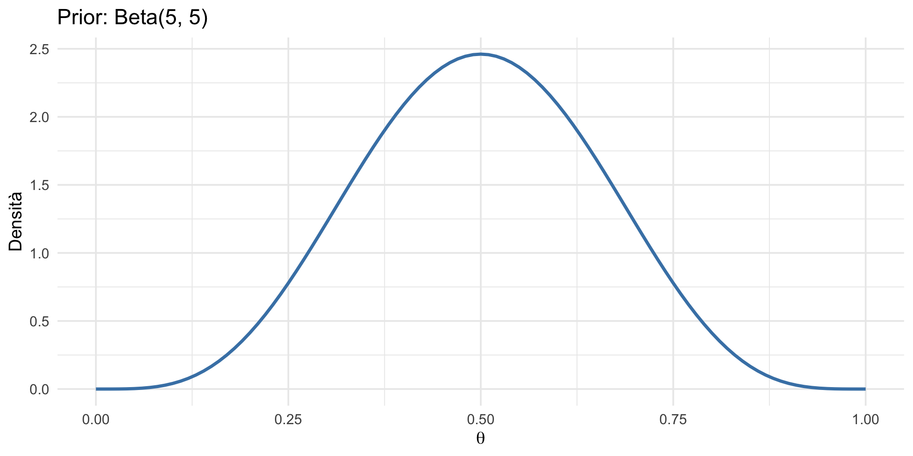
Il prior esprime la nostra conoscenza iniziale sul parametro \(\theta\) prima di osservare i dati.
Nello specifico, assegna maggiore probabilità ai valori centrali, suggerendo che ci aspettiamo che \(\theta\) sia con buona probabilità compreso tra 0.3 e 0.7.
Abbiamo osservato 7 successi su 10 prove:
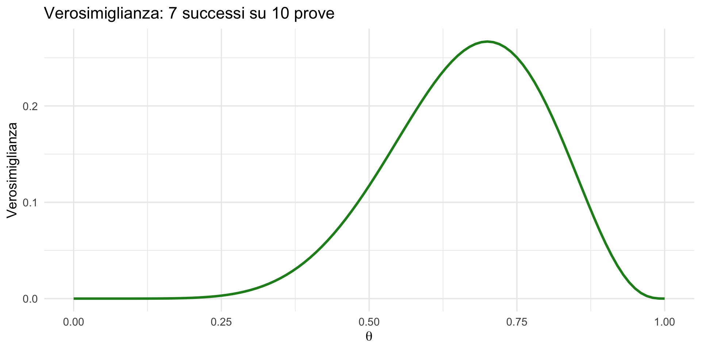
I dati suggeriscono valori di \(\theta\) intorno a 0.7.
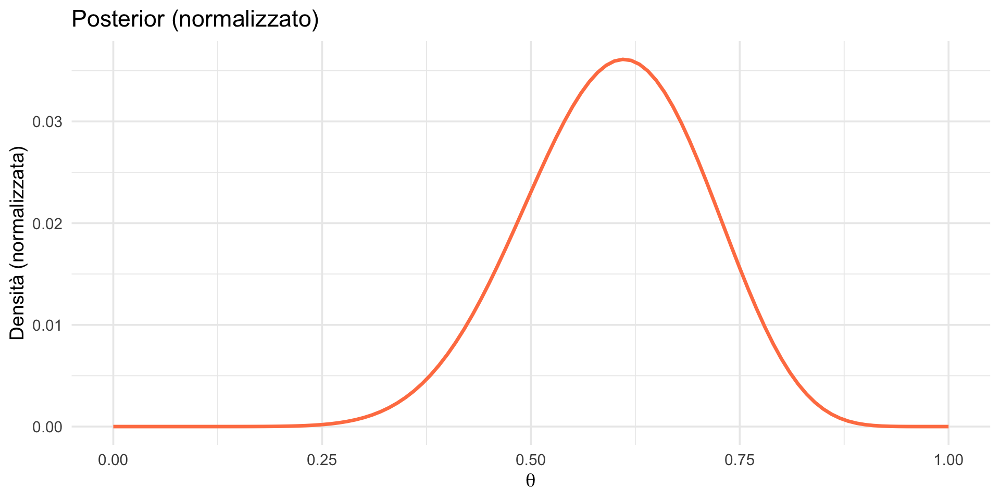
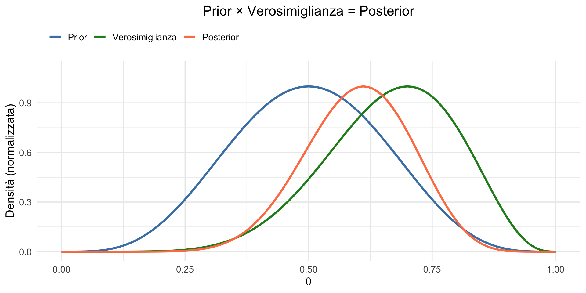
Il posterior agisce come una sintesi pesata: viene “attratto” verso i dati, ma risente anche dell’effetto regolarizzante del prior.
Cosa succede se abbiamo più dati?
Confrontiamo tre scenari (tutti con la stessa proporzione 70%):
# Stesso prior per tutti
prior <- dbeta(theta, 5, 5)
# Tre verosimiglianze (stessa proporzione, n diversi)
verosim_10 <- dbinom(7, 10, theta)
verosim_20 <- dbinom(14, 20, theta)
verosim_100 <- dbinom(70, 100, theta)
# Tre posterior
post_10 <- (verosim_10 * prior) / sum(verosim_10 * prior)
post_20 <- (verosim_20 * prior) / sum(verosim_20 * prior)
post_100 <- (verosim_100 * prior) / sum(verosim_100 * prior)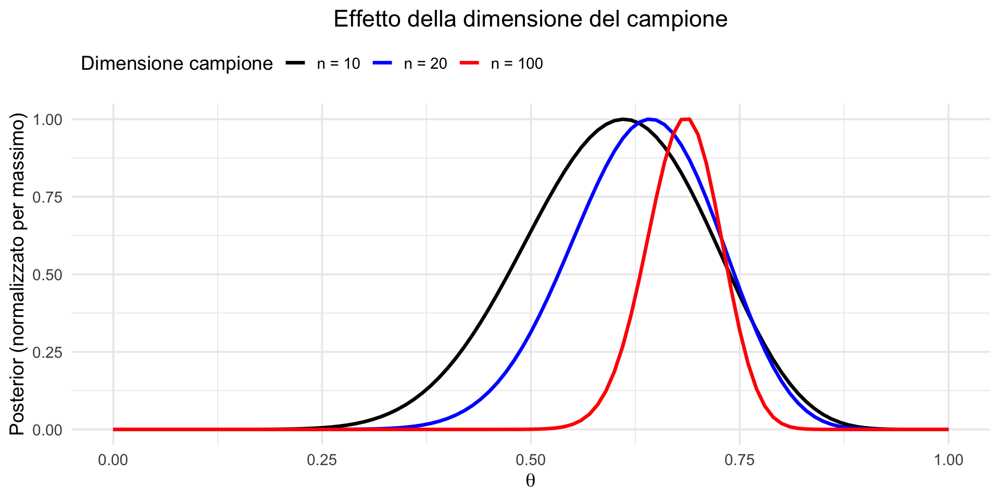
Con più dati:
“I dati vincono sempre, alla lunga.”
Con pochi dati, il prior ha molta influenza. Con molti dati, il posterior è dominato dalla verosimiglianza.
Questo principio ha un nome tecnico: consistenza asintotica del posterior. All’aumentare dei dati, il posterior converge verso il valore vero del parametro, indipendentemente dal prior scelto (purché il prior assegni probabilità non nulla al valore vero).
Questo fatto risponde a un’obiezione comune: “Ma il prior non è soggettivo?”
Sì, lo è — ma la sua influenza diminuisce con i dati.
Con un campione abbastanza grande, due ricercatori con prior diversi arriveranno essenzialmente allo stesso posterior. Con pochi dati, il prior conta — ma questo riflette la realtà: con poca informazione, le conclusioni dipendono inevitabilmente dalle assunzioni.
Il merito dell’approccio bayesiano è rendere queste assunzioni esplicite e trasparenti.
Confrontiamo tre prior per lo stesso problema (7/10):
# Tre prior
prior_info <- dbeta(theta, 5, 5)
prior_scettico <- dbeta(theta, 3, 7)
prior_uniforme <- dbeta(theta, 1, 1)
# Stessa verosimiglianza
verosim <- dbinom(7, 10, theta)
# Tre posterior
post_info <- (verosim * prior_info) / sum(verosim * prior_info)
post_scettico <- (verosim * prior_scettico) / sum(verosim * prior_scettico)
post_uniforme <- (verosim * prior_uniforme) / sum(verosim * prior_uniforme)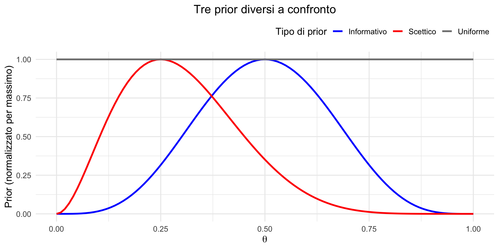
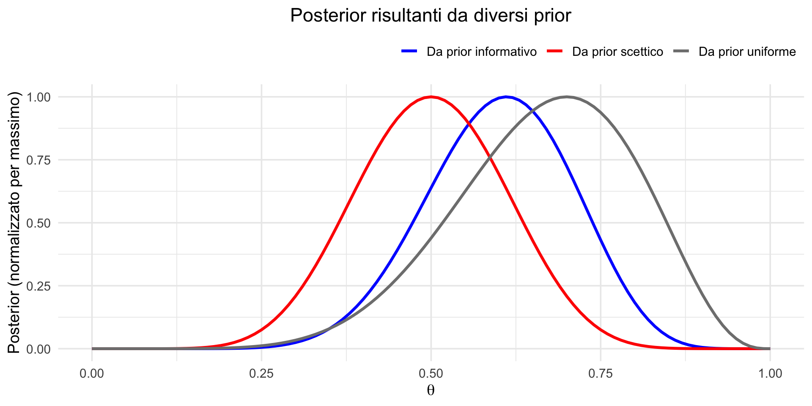
Con soli 10 osservazioni, il prior mantiene ancora un peso considerevole nel determinare la distribuzione finale. Ma come abbiamo visto, con più dati le tre curve convergerebbero.
Una psicologa clinica desidera valutare le prestazioni di un nuovo test diagnostico per la depressione.
Conoscenza a priori (prior):
Evidenza empirica (dati):
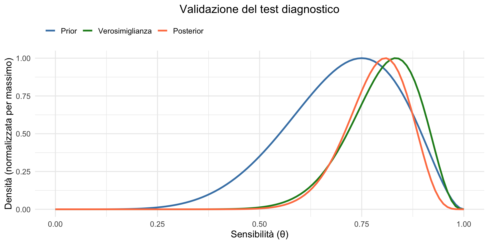
“Qual è la probabilità che la sensibilità del test sia almeno 0.75?”
Circa il 72% di probabilità che la sensibilità sia almeno 0.75. Questa è una risposta diretta a una domanda clinicamente rilevante.
Nel framework frequentista, la stessa domanda non avrebbe potuto essere formulata. Si sarebbe potuto calcolare un intervallo di confidenza, ma con l’avvertenza che non rappresenta la probabilità che il parametro sia nell’intervallo.
L’approccio bayesiano fornisce esattamente il tipo di informazione che il clinico cerca per prendere decisioni.
Quando discretizziamo \(\theta\) su una griglia di valori, il posterior è rappresentato da un insieme di probabilità puntuali. Per calcolare la probabilità su un intervallo, sommiamo le probabilità dei singoli punti in quell’intervallo:
Questa operazione approssima l’integrale della densità continua:
\[ P(\theta \geq 0.75) = \int_{0.75}^{1} p(\theta \mid D) \, d\theta. \]
Poiché la griglia è fitta (101 punti) e le probabilità sono già normalizzate, la somma fornisce un’ottima approssimazione dell’area sotto la curva.
Circa l’88% di probabilità che la sensibilità sia almeno 0.70.
Questa forma di inferenza probabilistica — che fornisce una distribuzione completa delle credenze anziché una singola stima puntuale — è direttamente utilizzabile per guidare le scelte cliniche e valutare l’appropriatezza del test in contesti reali.
Questo esercizio usa l’inferenza bayesiana per rispondere a una domanda che vi interessa direttamente:
“Sulla base della mia prestazione al test, qual è la probabilità che io abbia una competenza sufficiente per superare l’esame?”
L’esame consiste in 20 domande a scelta multipla, ciascuna con 5 alternative. Sistema di punteggio: risposta corretta +1 punto, risposta sbagliata −0.25 punti (penalizzazione per scoraggiare il guessing), risposta non data 0 punti.
Marco ha completato il test:
Punteggio grezzo: \(12 \times 1 + 5 \times (-0.25) + 3 \times 0 = 12 - 1.25 = 10.75\).
Ma a noi interessa stimare la sua vera competenza \(\theta\) = probabilità che Marco risponda correttamente a una domanda quando decide di rispondere.
Passo 1 — Prior: dai dati degli anni passati sappiamo che molti studenti arrivano poco preparati, la competenza media si aggira intorno a 0.30, e solo una minoranza ha competenze elevate. Usiamo un prior Beta(3, 7), con media \(\frac{3}{10} = 0.30\).
theta <- seq(0, 1, length.out = 101)
prior <- dbeta(theta, 3, 7)
ggplot(data.frame(theta = theta, prior = prior), aes(x = theta, y = prior)) +
geom_line(linewidth = 1.2, color = "steelblue") +
geom_vline(xintercept = 0.3, color = "steelblue", linetype = "dashed") +
labs(x = "Competenza (θ)", y = "Densità",
title = "Prior Beta(3, 7): competenza media = 0.30") +
theme_minimal(base_size = 14)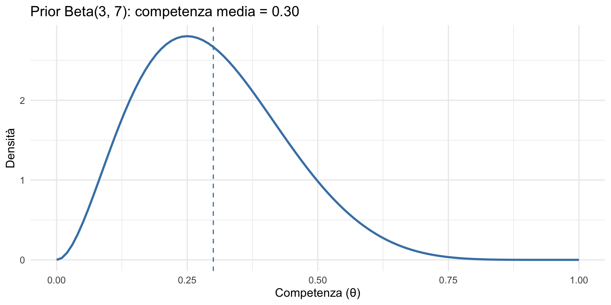
Marco ha risposto a 17 domande (12 + 5), lasciandone 3 in bianco. Delle 17 risposte date, 12 corrette e 5 sbagliate. Questo è un problema binomiale: 12 successi su 17 prove.
risposte_corrette <- 12
risposte_date <- 17
verosim <- dbinom(risposte_corrette, risposte_date, prob = theta)
ggplot(data.frame(theta = theta, verosim = verosim), aes(x = theta, y = verosim)) +
geom_line(linewidth = 1.2, color = "forestgreen") +
geom_vline(xintercept = 12/17, color = "darkred", linetype = "dashed") +
annotate("text", x = 0.78, y = max(verosim) * 0.9,
label = "MLE = 0.71", color = "darkred", size = 4) +
labs(x = "Competenza (θ)", y = "Verosimiglianza",
title = "Verosimiglianza: 12 corrette su 17 risposte") +
theme_minimal(base_size = 14)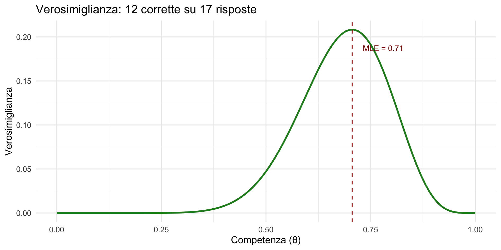
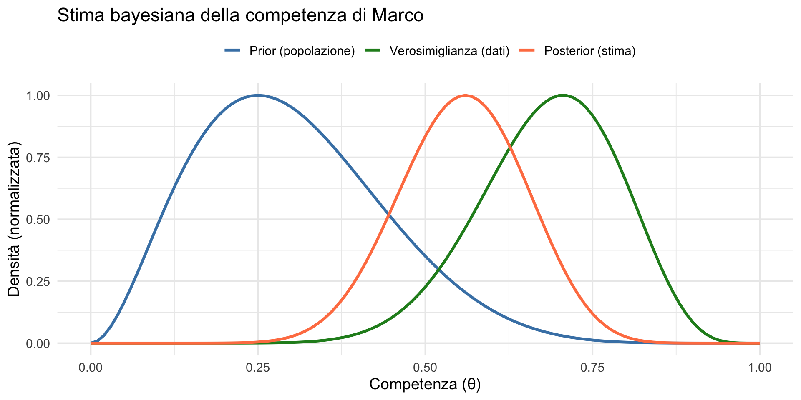
I dati di Marco hanno aggiornato in maniera considerevole le nostre credenze.
Per superare l’esame, la competenza stimata deve superare \(\theta = 0.50\) (competenza “sufficiente”).
[1] 0.738Marco ha circa il 74% di probabilità di avere una competenza sufficiente.
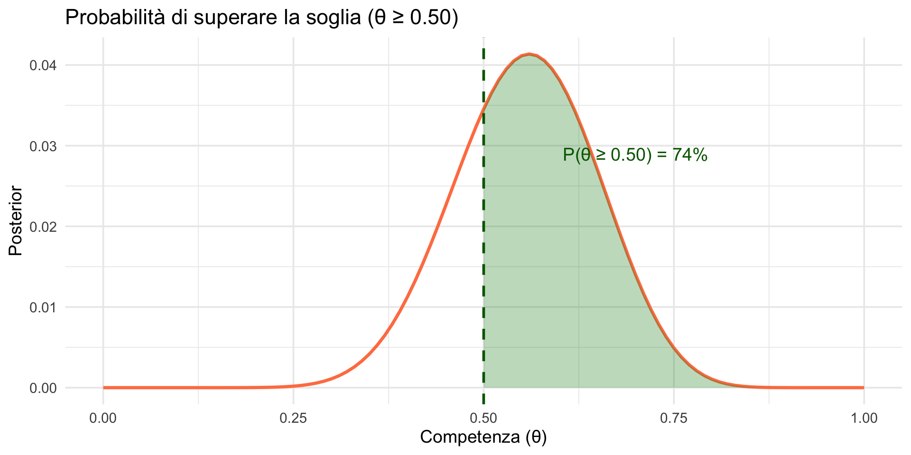
Vediamo tre scenari (sempre su 17 risposte date):
# Tre verosimiglianze
verosim_anna <- dbinom(15, 17, theta)
verosim_giovanni <- dbinom(10, 17, theta)
verosim_luca <- dbinom(7, 17, theta)
# Tre posterior (stesso prior per tutti)
prior <- dbeta(theta, 3, 7)
post_anna <- (prior * verosim_anna) / sum(prior * verosim_anna)
post_giovanni <- (prior * verosim_giovanni) / sum(prior * verosim_giovanni)
post_luca <- (prior * verosim_luca) / sum(prior * verosim_luca)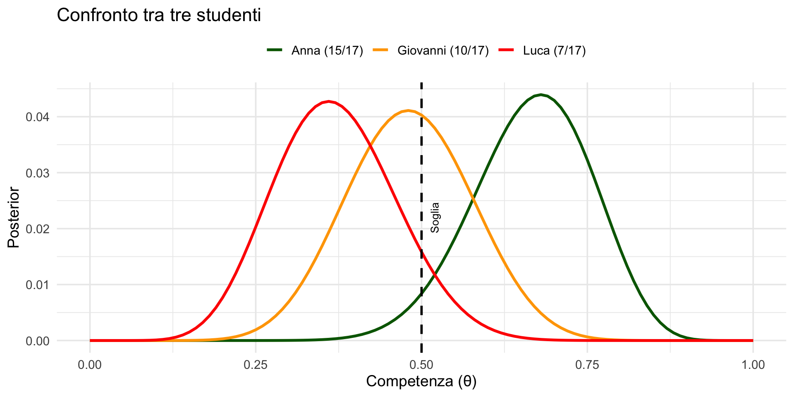
prob_anna <- sum(post_anna[theta >= soglia])
prob_giovanni <- sum(post_giovanni[theta >= soglia])
prob_luca <- sum(post_luca[theta >= soglia])
data.frame(
Studente = c("Anna", "Giovanni", "Luca"),
Corrette = c(15, 10, 7),
Percentuale = c("88%", "59%", "41%"),
P_supera_soglia = paste0(round(c(prob_anna, prob_giovanni, prob_luca)*100), "%")
) Studente Corrette Percentuale P_supera_soglia
1 Anna 15 88% 97%
2 Giovanni 10 59% 44%
3 Luca 7 41% 9%| Studente | Prestazione | Probabilità di passare |
|---|---|---|
| Anna | 15/17 (88%) | 97% — Passa sicuramente |
| Giovanni | 10/17 (59%) | 44% — Situazione incerta |
| Luca | 7/17 (41%) | 9% — Non passa |
La prestazione di Giovanni (44%) è vicina alla soglia, quindi c’è molta incertezza — anche se la stima suggerisce che è più probabile che Giovanni non passi.
Il prior Beta(3, 7) riflette che la maggior parte degli studenti è poco preparata. Quando uno studente ottiene un buon risultato (come Anna), i dati “vincono” facilmente sul prior. Ma per Giovanni, la cui prestazione è modesta, il prior ha ancora influenza.
L’inferenza bayesiana permette di:
Questo è molto più informativo di un semplice punteggio.
La penalizzazione (−0.25 per le risposte sbagliate) scoraggia il guessing. Se uno studente tira a caso su 5 alternative, il guadagno atteso è: \(0.20 \times 1 + 0.80 \times (-0.25) = 0.20 - 0.20 = 0\).
Rispondere a caso non conviene — la penalizzazione è calibrata esattamente per annullare il vantaggio del guessing.
Lezioni 5-11 — Probabilità, distribuzioni, verosimiglianza: gli strumenti matematici.
Lezioni 14-16 — L’inferenza frequentista: cosa fa, come funziona, e perché ha generato una crisi di riproducibilità.
Lezione 17 (oggi) — L’inferenza bayesiana: prior, verosimiglianza, posterior. Il calcolo a mano e l’approssimazione a griglia. L’effetto dei dati e del prior.
Avete ora visto entrambi i paradigmi.
Il frequentismo risponde a:
\(P(\text{dati} \mid H_0)\) — probabilità dei dati assumendo vera l’ipotesi nulla.
Il bayesianesimo risponde a:
\(P(\theta \mid \text{dati})\) — probabilità dei parametri dopo aver osservato i dati.
Il resto del corso sarà dedicato a sviluppare gli strumenti bayesiani che vi permetteranno di porre — e rispondere — domande più dirette e rilevanti per la ricerca.
L’approssimazione a griglia permette calcoli bayesiani con una semplice moltiplicazione.
Il posterior è un compromesso tra prior e verosimiglianza.
Con più dati, il posterior è dominato dalla verosimiglianza.
Il prior è esplicito e trasparente — a differenza delle assunzioni nascoste nel frequentismo.
L’inferenza bayesiana fornisce risposte dirette alle domande cliniche e di ricerca.
Conoscenza pregressa Dati osservati
↓ ↓
PRIOR VEROSIMIGLIANZA
↓ ↓
└──────→ × ←────────┘
↓
POSTERIOR
↓
Decisioni informateMateriale di studio: https://ccaudek.github.io/utet-companion/
Prossimo argomento:
“Quantificare e aggiornare l’incertezza. L’apprendimento sequenziale.”
Vedremo come il posterior di oggi diventa il prior di domani — il meccanismo che rende l’inferenza bayesiana un sistema di apprendimento cumulativo.